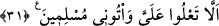
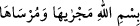

“Rahmân ve Rahîm olan Allah’ın adıyla (başlamakta)dır.”
Besmeledeki bâ Allah’ın bakâsı, sîn senâsı (yüceliği), mîm mülkü, elif ahadiyyeti, iki
lâm cemâli ve celâli, hâ hüviyyeti demektir. “er-Rahmân”, dünyada ve âhirette umûm
ehline rahmetine; “er-Rahîm”, âhirette husûs ehline rahmetine işârettir.
Büyüklerden birisi şöyle demiştir: “Aslında bu besmele, Berâe sûresinin
besmelesidir. Orada bahsedilen kimselerden uzaklaşma söz konusu olduğu için bu
besmele, Süleyman (a.s.)’a îman eden hayvanlara verilmiş ve o sûrenin başındaki bâ
harfi ile yetinilmiştir. Çünkü varlık âlemindeki her şey, Allah’ın genel ve özel
rahmetinden hâlî değildir.
Sûrelerin başlarındaki besmelelerin aksine bu besmele,
“ âyetinde olduğu gibi tam bir âyet değildir.
Bu âyetin her bir harfi, hâlis cennet şarabı için kaptır. Her bir kelimesi, tahkîk incisi
için bir sedeftir. Her bir noktası, hidâyet semâsının bir yıldızıdır. Dalâlet ehlinin
taşlandığı bir yıldızdır o.
Molla Câmî besmele hakkında şöyle der:
On dokuz harftir; on sekiz bin
Âlem ondan feyiz almıştır
31. “Bana baş kaldırmayın, teslimiyet gösterip bana gelin, diye (yazmaktadır).”
“Bana baş kaldırmayın,” zorba kralların yaptığı gibi bana karşı büyüklenmeyin,
büyüklük taslamayın, mü’minler olduğunuz halde “teslimiyet gösterip bana gelin, diye
(yazmaktadır).” Çünkü îman İslâm’ı/teslîmiyeti ve boyun eğmeyi gerektirir. Aksi ise
böyle değildir.
Katâde der ki: “İşte peygamberler (aleyhimü’s-selâm) böyle uzun olmayan cümleler
yazarlardı. Yani, Süleyman (a.s.)’ın mektubu Allah Teâlâ’nın zikrettiği mikdar kadardı.”
Burada Süleyman (a.s.), peygamberliğini isbat eden bir delil ortaya koymadan ona
İslâm olmayı arz etmemiştir ki bunun taklîde dâvet olduğu vehmedilsin. Çünkü mektubun
bu şekilde bırakılması, onu gönderenin peygamberliğine delâlet eden açık bir
mûcizedir.
Fakir (Bursevî) der ki: Bu konuda peygamberin doğruluğuna delâlet eden zarûrî bir
ilmin/bilginin meydana gelmiş olması yeterlidir. Aksi halde mektubun zikredilen şekilde
bırakılmasının cinlerin tasarrufu ile olması da imkan dışı görülemez. Çünkü Belkıs için
büyük bir tahtın yapılması gibi cinler ona bazı harikulâde işler gösterirlerdi. Zîrâ onun
annesi de cinlerdendi.